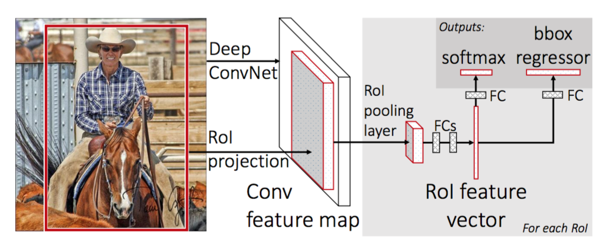
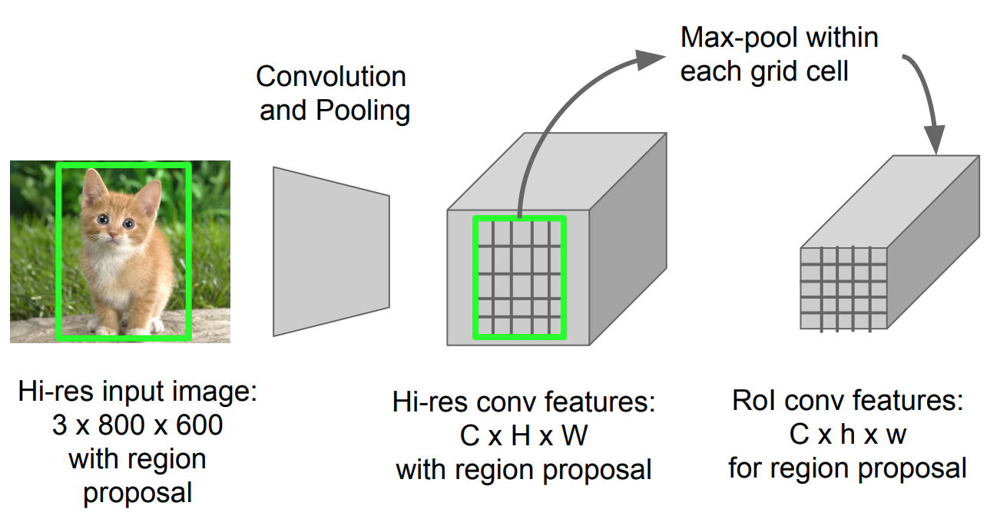
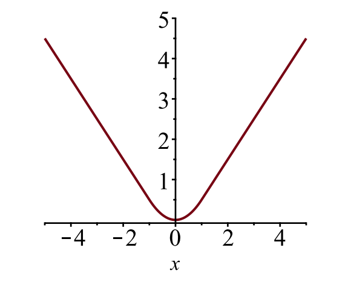
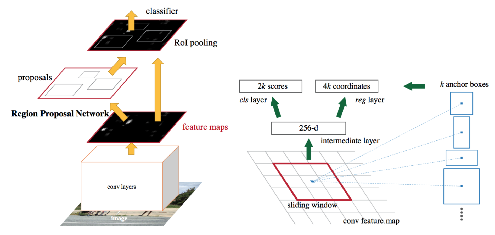
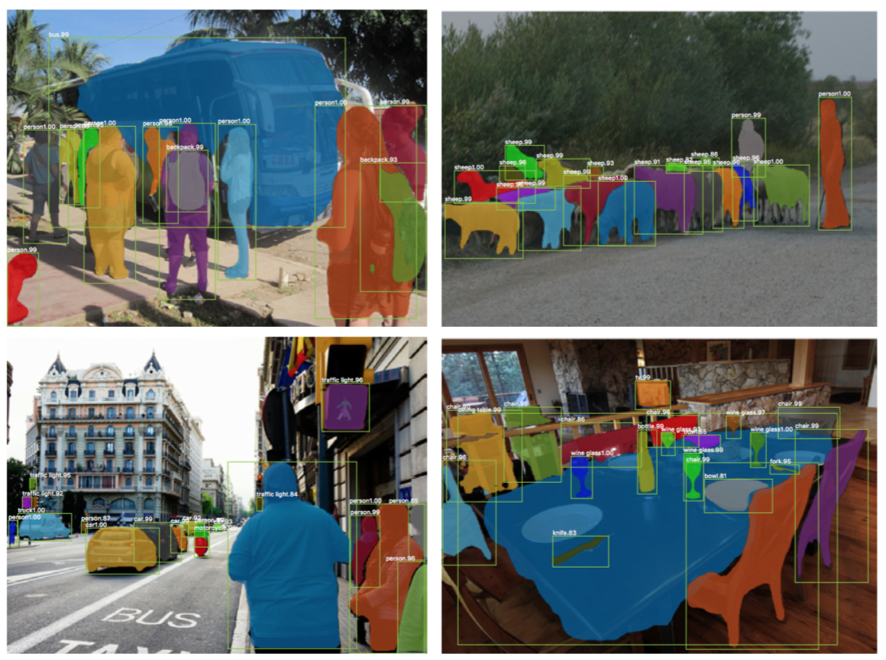
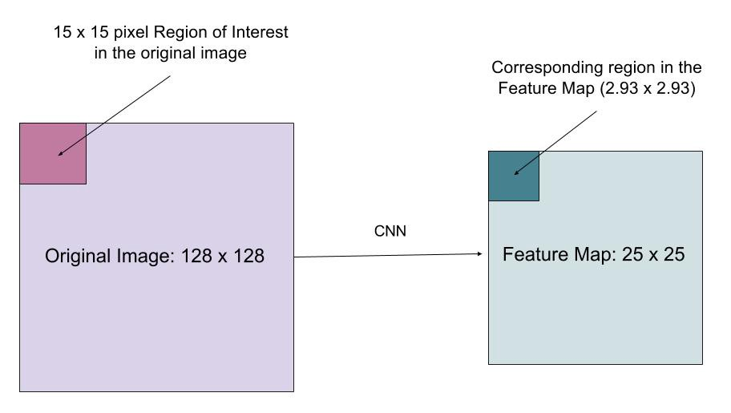
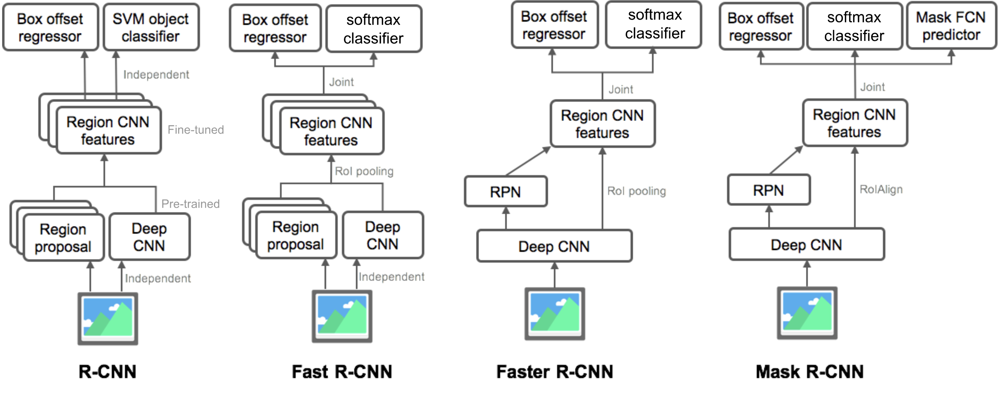

目录
- R-CNN Model Workflow Bounding Box Regression Common Tricks Speed Bottleneck
- Fast R-CNN RoI Pooling Model Workflow Loss Function Speed Bottleneck
- Faster R-CNN Model Workflow Loss Function
- Mask R-CNN RoIAlign Loss Function
- Summary of Models in the R-CNN family
- Reference
[2018-12-20 更新：移除本文中的 YOLO。第四部分将介绍包括 YOLO 在内的多种快速目标检测算法。] [2018-12-27 更新：为 R-CNN 补充边界框回归和常用技巧章节。]
在“傻瓜式目标检测”系列中，我们先在 介绍了图像处理的基础概念，例如梯度向量和 HOG。随后在 介绍了经典的卷积神经网络分类架构，以及目标检测领域的先驱模型 Overfeat 和 DPM。本系列第三篇文章，我们将一起回顾 R-CNN（“Region-based CNN”）家族的一系列模型。傻瓜式目标检测教程 第一部分：梯度向量、HOG 与 Selective Search傻瓜式目标检测系列之二：CNN、DPM 与 Overfeat
本系列所有文章链接： [] [] [] []。傻瓜式目标检测教程 第一部分：梯度向量、HOG 与 Selective Search傻瓜式目标检测系列之二：CNN、DPM 与 Overfeat傻瓜式目标检测系列第 3 篇：R-CNN 家族目标检测第 4 部分：快速检测模型
以下是本文涉及的论文列表。
| Model | Goal | Resources |
|---|---|---|
| R-CNN | Object recognition | [paper][code] |
| Fast R-CNN | Object recognition | [paper][code] |
| Faster R-CNN | Object recognition | [paper][code] |
| Mask R-CNN | Image segmentation | [paper][code] |
R-CNN
R-CNN（Girshick et al., 2014）是“Region-based Convolutional Neural Networks”的缩写。其核心思想分为两步：首先通过 傻瓜式目标检测教程 第一部分：梯度向量、HOG 与 Selective Search 找出数量可控的候选边界框（称为“region of interest”或“RoI”）；然后从每个候选区域独立提取 CNN 特征，用于后续分类。

模型流程
R-CNN 的工作流程可以总结如下：
- 在图像分类任务上预训练一个 CNN 网络，例如在 ImageNet 数据集上训练的 VGG 或 ResNet。分类任务包含 N 个类别。
注：你可以在 Caffe Model Zoo 中找到预训练的 AlexNet。Tensorflow 中可能找不到，但 Tensorflow-slim 模型库提供了预训练的 ResNet、VGG 等模型。
- Propose category-independent regions of interest by selective search (~2k candidates per image). Those regions may contain target objects and they are of different sizes.
- Region candidates are warped to have a fixed size as required by CNN.
- Continue fine-tuning the CNN on warped proposal regions for K + 1 classes; The additional one class refers to the background (no object of interest). In the fine-tuning stage, we should use a much smaller learning rate and the mini-batch oversamples the positive cases because most proposed regions are just background.
- Given every image region, one forward propagation through the CNN generates a feature vector. This feature vector is then consumed by a binary SVM trained for each class independently. The positive samples are proposed regions with IoU (intersection over union) overlap threshold >= 0.3, and negative samples are irrelevant others.
- To reduce the localization errors, a regression model is trained to correct the predicted detection window on bounding box correction offset using CNN features.
边界框回归
给定一个预测边界框坐标 \mathbf{p} = (p_x, p_y, p_w, p_h)（中心坐标、宽、高）及其对应的真实框坐标 \mathbf{g} = (g_x, g_y, g_w, g_h)，回归器要学习两个中心之间的平移变换（scale-invariant）以及宽高之间的对数尺度变换（log-scale）。所有变换函数都以 \mathbf{p} 作为输入。

采用这种变换的一个明显好处是，所有边界框修正函数 d_i(\mathbf{p})（其中 i \in \{ x, y, w, h \}）的取值范围可以是 [-∞, +∞]。它们要学习的目标是：
标准的回归模型可以通过最小化带正则化的 SSE 损失来解决这个问题：
正则化项在这里非常关键，R-CNN 论文通过交叉验证选出了最佳的 λ 值。值得注意的是，并非所有预测框都有对应的真实框。例如，如果两者完全没有重叠，就没有必要进行边界框回归。因此，只有那些与真实框 IoU 至少达到 0.6 的预测框才会被用于训练边界框回归模型。
常用技巧
在 R-CNN 和其他检测模型中，有几种技巧被广泛使用。
非极大值抑制（Non-Maximum Suppression）
模型很可能为同一个物体找出多个边界框。非极大值抑制可以避免对同一实例的重复检测。当我们得到同一类别的一组匹配边界框后： 按置信度分数对所有边界框排序。 丢弃置信度低的框。 只要还有剩余的边界框，就重复以下步骤： 贪婪地选择当前分数最高的框。 跳过那些与已选框 IoU 大于 0.5 的剩余框。

难负样本挖掘（Hard Negative Mining）
我们把不包含目标物体的边界框视为负样本。并非所有负样本都同样难以区分。例如，完全空白的背景通常是“简单负样本”；而如果框内包含奇怪的噪声纹理或物体局部，则可能很难识别，这些就是“难负样本”。
难负样本很容易被错误分类。我们可以在训练过程中显式地找出这些假阳性样本，并把它们加入训练数据，从而提升分类器的性能。
速度瓶颈
浏览 R-CNN 的整个训练流程，你会发现训练一个 R-CNN 模型既昂贵又缓慢，因为以下步骤涉及大量计算：
- 对每张图像运行 selective search 提出约 2000 个候选区域；
- 为每个候选区域生成 CNN 特征向量（N 张图像 × 2000 个）。
- 整个过程涉及三个相互独立的模型，计算共享很少：用于图像分类和特征提取的卷积神经网络、用于识别目标物体的 SVM 分类器，以及用于修正边界框的回归模型。
Fast R-CNN
为了让 R-CNN 更快，Girshick（2015）对训练流程进行了改进，将三个独立模型统一成一个联合训练的框架，并大幅增加计算共享，称为 Fast R-CNN。该模型不再为每个候选区域单独提取 CNN 特征，而是对整张图像做一次 CNN 前向传播，所有候选区域共享这一特征矩阵。随后同一特征矩阵被分支用于训练物体分类器和边界框回归器。总之，计算共享显著提升了 R-CNN 的速度。

RoI Pooling
这是一种特殊的最大池化操作，能将图像中任意尺寸 h×w 的投影区域特征，转换为一个固定大小的小窗口 H×W。输入区域被划分为 H×W 个网格，每个网格大约为 h/H×w/W 大小，然后在每个网格内进行最大池化。

模型流程
Fast R-CNN 的工作流程总结如下，很多步骤与 R-CNN 相同：
- First, pre-train a convolutional neural network on image classification tasks.
- Propose regions by selective search (~2k candidates per image).
- Alter the pre-trained CNN: Replace the last max pooling layer of the pre-trained CNN with a RoI pooling layer. The RoI pooling layer outputs fixed-length feature vectors of region proposals. Sharing the CNN computation makes a lot of sense, as many region proposals of the same images are highly overlapped. Replace the last fully connected layer and the last softmax layer (K classes) with a fully connected layer and softmax over K + 1 classes.
- Finally the model branches into two output layers: A softmax estimator of K + 1 classes (same as in R-CNN, +1 is the “background” class), outputting a discrete probability distribution per RoI. A bounding-box regression model which predicts offsets relative to the original RoI for each of K classes.
损失函数
模型针对分类和定位两个任务的组合损失进行优化：
| 符号 | 含义 | | u | 真实类别标签，范围为 u \in 0, 1, \dots, K；按惯例，背景类的标签为 u = 0。 | | p | 针对每个 RoI 的 K+1 类离散概率分布 p = (p_0, \dots, p_K)，由全连接层输出的 K+1 个值经过 softmax 计算得到。 | | v | 真实边界框坐标 v = (v_x, v_y, v_w, v_h) 。 | | t^u | 预测的边界框修正值 t^u = (t^u_x, t^u_y, t^u_w, t^u_h)。定义见上文。 | {:.info}
损失函数将分类损失和边界框预测损失相加：\mathcal{L} = \mathcal{L}_\text{cls} + \mathcal{L}_\text{box}。对于“背景”RoI，通过指示函数 \mathbb{1} [u \geq 1] 忽略边界框损失 \mathcal{L}_\text{box}，该函数定义为：
整体损失函数为：
边界框损失 \mathcal{L}_{box} 应使用鲁棒的损失函数衡量 t^u_i 与 v_i 之间的差异。这里采用的是 Smooth L1 损失，据称对离群点不敏感。

速度瓶颈
Fast R-CNN 在训练和测试速度上都快得多。然而，改进幅度并不惊人，因为候选区域仍然由独立的 selective search 模型生成，这部分计算开销依然很大。
Faster R-CNN
一个直观的加速方案是将候选区域生成算法也整合到 CNN 模型中。Faster R-CNN（Ren et al., 2016）正是这么做的：构建一个单一、统一的模型，包含 RPN（Region Proposal Network）和 Fast R-CNN，并共享卷积特征层。

模型流程
- Pre-train a CNN network on image classification tasks.
- Fine-tune the RPN (region proposal network) end-to-end for the region proposal task, which is initialized by the pre-train image classifier. Positive samples have IoU (intersection-over-union) > 0.7, while negative samples have IoU < 0.3. Slide a small n x n spatial window over the conv feature map of the entire image. At the center of each sliding window, we predict multiple regions of various scales and ratios simultaneously. An anchor is a combination of (sliding window center, scale, ratio). For example, 3 scales + 3 ratios => k=9 anchors at each sliding position.
- Train a Fast R-CNN object detection model using the proposals generated by the current RPN
- Then use the Fast R-CNN network to initialize RPN training. While keeping the shared convolutional layers, only fine-tune the RPN-specific layers. At this stage, RPN and the detection network have shared convolutional layers!
- Finally fine-tune the unique layers of Fast R-CNN
- Step 4-5 can be repeated to train RPN and Fast R-CNN alternatively if needed.
损失函数
Faster R-CNN 使用多任务损失函数进行优化，与 Fast R-CNN 类似。
| 符号 | 含义 | | p_i | anchor i 是物体的预测概率。 | | p^*_i | anchor i 是否为物体的真实二值标签。 | | t_i | 预测的四个参数化坐标。 | | t^*_i | 真实的坐标。 | | N_\text{cls} | 归一化项，论文中设为 mini-batch 大小（约 256）。 | | N_\text{box} | 归一化项，论文中设为 anchor 位置数量（约 2400）。 | | \lambda | 平衡参数，论文中设为约 10（使 \mathcal{L}_\text{cls} 和 \mathcal{L}_\text{box} 两项权重大致相当）。 | {:.info}
多任务损失函数将分类损失和边界框回归损失结合起来：
其中 \mathcal{L}_\text{cls} 是两分类的对数损失，因为我们可以很容易地将多分类问题转化为“是否为目标物体”的二分类问题。L_1^\text{smooth} 是 smooth L1 损失。
Mask R-CNN
Mask R-CNN（He et al., 2017）将 Faster R-CNN 扩展到了像素级的 。关键在于将分类任务和像素级 mask 预测任务解耦。在 Faster R-CNN 框架基础上，它额外增加了一个分支，与现有的分类和定位分支并行地预测物体 mask。mask 分支是一个小型的全卷积网络，应用于每个 RoI，以像素到像素的方式预测分割 mask。傻瓜式目标检测教程 第一部分：梯度向量、HOG 与 Selective Search

由于像素级分割对对齐精度的要求远高于边界框，Mask R-CNN 改进了 RoI Pooling 层（称为“RoIAlign 层”），使 RoI 能更精确地映射回原始图像区域。

RoIAlign
RoIAlign 层的设计目的是解决 RoI Pooling 中因量化导致的位置偏差。RoIAlign 去掉了取整量化，例如使用 x/16 而不是 [x/16]，从而使提取的特征能与输入像素精确对齐。在计算输入的浮点位置值时，使用了 双线性插值。

损失函数
Mask R-CNN 的多任务损失函数综合了分类、定位和分割 mask 的损失： \mathcal{L} = \mathcal{L}_\text{cls} + \mathcal{L}_\text{box} + \mathcal{L}_\text{mask}，其中 \mathcal{L}_\text{cls} 和 \mathcal{L}_\text{box} 与 Faster R-CNN 中的定义相同。
mask 分支为每个 RoI 和每个类别生成一个 m×m 大小的 mask；总共有 K 个类别。因此总输出维度为 K \cdot m^2。由于模型为每个类别分别学习 mask，各类别之间在生成 mask 时没有竞争关系。
\mathcal{L}_\text{mask} 定义为平均二值交叉熵损失，仅在区域属于真实类别 k 时才计算第 k 个 mask 的损失。
其中 y_{ij} 是真实 mask 中大小为 m×m 的区域内坐标 (i, j) 处的标签；\hat{y}_{ij}^k 是为真实类别 k 学习到的 mask 中同一位置的预测值。
R-CNN 家族模型总结
这里展示了 R-CNN、Fast R-CNN、Faster R-CNN 和 Mask R-CNN 的模型设计。通过对比细微的差异，你可以清晰地看到一个模型是如何演进到下一个版本的。
